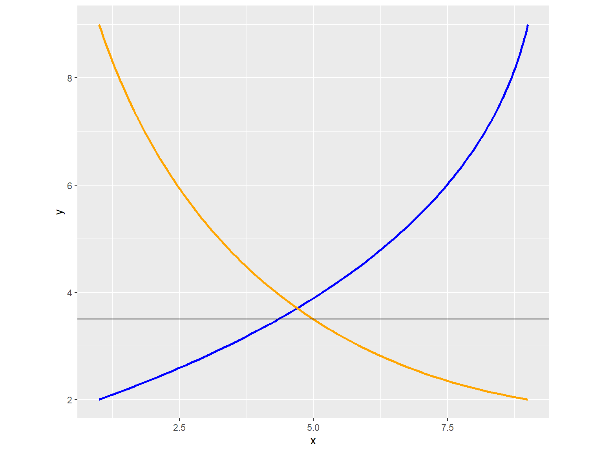

Trade Presentation
Shahzia Teja
July 8, 2019
Ceteris Paribus
Partial Equilibrium
Partial Equilibrium for Trade & Regional Analysis
Partial Equilibrium models allow us to examine the effects of economic shocks in a parsimonious modeling environment with few data requirements or assumptions.
In this world, a specific market clears without regard to prices and quantity changes in other markets. In other words, all other prices, quantities and income are assumed to be fixed. Some of the advantages of this approach are obvious, including the ability to create and run models quickly, as well as producing intuitively appealing results.
Tariffs as a Shock
When countries impose trade barriers, in this case in the form of tarrifs, prices and quantities of implicated goods can be expected to respond.
We assume a large open economy with downward sloping import demand curves (this implies the country’s demand affects prices). In general, an importing country is assumed to have prices above the world price, since the alternative would imply no trade takes place. Buyers are assumed to be indifferent between domestic and foreign-produced substitutes.
Simplest Partial Equilibrium Model
System Functions
Domestic Demand: \(Q_d=\alpha(P)^\eta\)
Domestic Supply: \(Q_s=\beta(P)^\epsilon\)
Import Demand (the excess of domestic demand over domestic supply): \(M_d=\alpha(P)^\eta-\beta(P)^\epsilon\)
Import Supply: \(M_s=Y(P_w)^\theta\)
Internal Price: \(P=(1+t)*P_w\)
Autarky
Without imports, domestic demand equals domestic supply.
\(Q_d = Q_s\) or \(\alpha P^\eta = \beta P^\epsilon\)
which implies \(\alpha / \beta = P^{\epsilon - \eta}\)
This can be solved for: \[P_0 = (\alpha / \beta) ^ \frac{1}{\epsilon - \eta}\] \[Q_0 = \alpha P_0^\eta = \alpha (\alpha / \beta) ^ \frac{\eta}{\epsilon - \eta} = \alpha ^ \frac{\epsilon}{\epsilon - \eta} \beta ^ \frac{-\eta}{\epsilon - \eta}\]
Free Trade
In this case, import demand equals import supply…
\(M_d = M_s\) or \(\alpha P^\eta - \beta P^\epsilon = \gamma P_w^\theta\)
but \(P = (1 + t) P_w\) which implies:
\(\alpha (1 + t)^\eta P_w^\eta - \beta (1 + t)^\epsilon P_w^\epsilon = \gamma P_w^\theta\)
Autarky Illustrated
Suppose:
\(\alpha =\) 7480.06, \(\beta =\) 1182.38, \(\gamma =\) 6297.68, \(\eta =\) -1, \(\epsilon =\) 3 and \(\theta =\) 10
Ignoring tariffis for now…
This implies \(P_0 =\) 1.59 and \(Q_0 =\) 4716.48
Whereas in the benchmark case,
\(P^* = P_w = 1\) and \(Q^* = Q_{Domestic} + Q_{Imported}\)
= 1182.38 + 6297.68 = 7480.06
Impact of Moving from Autarky to Free Trade
Using demand and supply curves defined above, price falls from \(P_0\) = 1.59 to \(P_w\) = 1
Consumer Surplus
\(\Delta CS = -\int_{P_0}^{P_w} Q_d(u) du\)
but \(p_w\) < \(p_0\), so,
\(\Delta CS = -\int_{P_w}^{P_0} -Q_d(u) du = \alpha \int_{P_w}^{P_0} u^\eta du\)
if \(\eta \neq -1\), this equals \(\alpha \left[\frac{u^{\eta + 1}}{\eta + 1}\right]_{P_w}^{P_0}\)
if \(\eta = -1\), this equals \(\alpha \left[\ln u \right]_{P_w}^{P_0}\)
In this case, \(\Delta CS =\) 3449.64
Producer Surplus
\(\Delta PS = \int_{P_0}^{P_w} Q_s(u) du\)
but \(p_w\) < \(p_0\), so,
\(\Delta PS = -\int_{P_w}^{P_0} Q_s(u) du = -\beta \int_{P_w}^{P_0} u^\epsilon du\)
Since \(\epsilon > 0\), this equals \(-\beta \left[\frac{u^{\epsilon + 1}}{\epsilon + 1} \right]_{P_w}^{P_0}\)
In this case, \(\Delta PS =\) -1574.42

Net Change in Welfare
In this case we have \(\Delta CS + \Delta PS > 0\)
In fact, \(\Delta CS + \Delta PS =\) 1875.22
Impact of Tariff in Simple Model
Prices & Quantities
| Variables | Before | After | Change | Percent |
|---|---|---|---|---|
| Pw | 1.000 | 0.969 | -0.031 | -3.14 |
| P | 1.000 | 1.162 | 0.162 | 16.23 |
| Md | 6297.68 | 4578.51 | -1719.17 | -27.30 |
| Qs | 1182.38 | 1856.80 | 674.42 | 57.04 |
| Qd | 7480.06 | 6435.31 | -1044.75 | -13.97 |
| Tariffs | 0.00 | 886.97 | 886.97 | NA |
\(dW = -M dP_w + \frac{1}{2}(P - P_w) dM\)
Terms of trade effect: \(-M dP_w =\) 170.64
Harberger triangle effect: \(\frac{1}{2}(P - P_w) dM =\) -166.52
Welfare effect: \(dW =\) 4.11
How Accurate is the approximation?
\(dW =\) 4.11
\(\Delta CS = \alpha \left[ \ln u \right]_{P_w}^{P_1} =\) -1125.31
\(\Delta PS = \frac{\beta}{\epsilon + 1} \left[ u^{\epsilon + 1} \right]_{P_w}^{P_1} =\) 243.96
\(\Delta Tariffs = (P_w^1 - P_w) M =\) 886.97
\(\Delta W =\) 5.63

Expected Outcome of Tariffs
Basic micro tells us..
## what theory tells us..
Equilibrium (no trade)
Equilibrium (with trade)
A Tariff is Introduced
Net Loss of Tariff
System Equations
Domestic Demand: \[Q_d=\alpha(P)^\eta\]
Domestic Supply: \[Q_s=\beta(P)^\epsilon\]
Import Demand (the excess of domestic demand over domestic supply): \[M_d=\alpha(P)^\eta-\beta(P)^\epsilon\]
Import Supply: \[M_s=Y(P_w)^\theta\]
Internal Price: \[P=(1+t)*P_w\]
Assumptions
Calibration
The Basic Model
Intro GSIM
Given the limitations of the simple model, GSIM is an alternative based on a 4x4 region trade region that assumes a linear form of the system equations.
Intro a Tariff
Simulation results
Welfare outcomes?
Future Work
Could be extended to model 11x11 provinces (or 12x12 with ROW) to look at provincial trade flows. Some related work being done internally, and some outside work (Stats Can Hexagon Paper) where gravity models suggest that trade flows could potentially be quite a bit higher and are impeded by barriers. What would we find if we relaxed some trade barriers?
Newton’s Method
